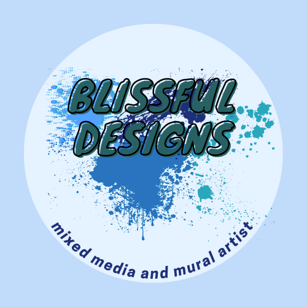
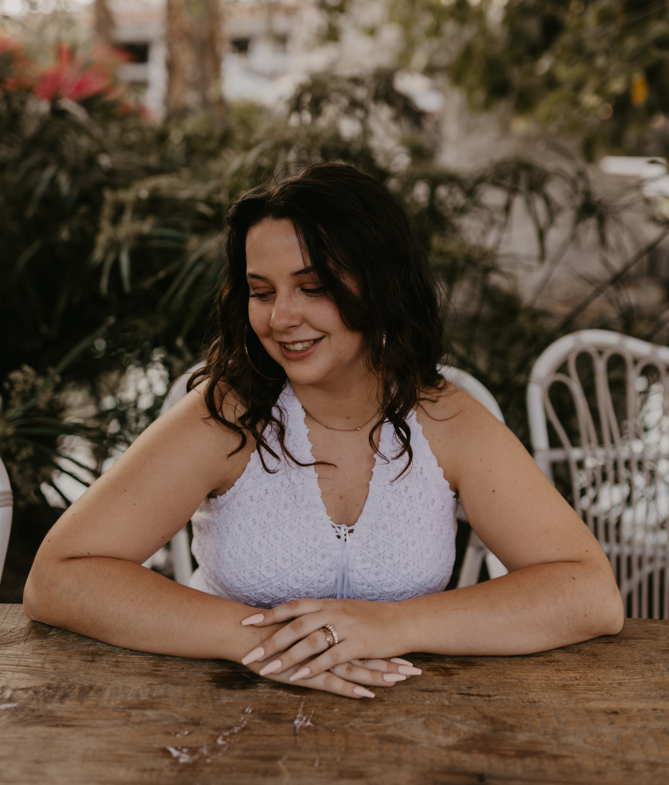

About the Creator / Artist
Gracie Gallegos
Hey! I am the creator and artist behind Blissful Designs. For as long as I can remember, I've been making art. Even as kid I started my own business for a while making handmade earrings and hair bows :) Now I'm continuing to make art while exploring other passions, specifically tech and coding! I made this website as a portfolio project to present my art and programming skills. I hope you enjoy looking at my project. This will be an ongoing project, just for fun! Thank you for your support and for checking out my page !
Contact
Gracie Gallegos:
ggallegos3817@gmail.com